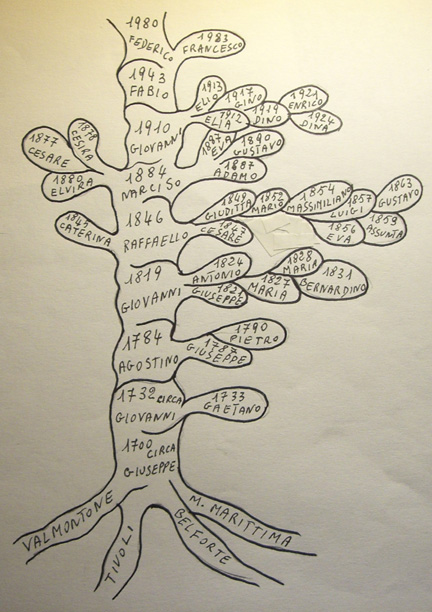
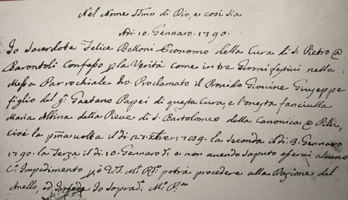

L'ALBERO GENEALOGICO
Tutti i Papei oggi in vita, provengono da un unico
ceppo e sono quindi legati, se pur alla lontana, da vincolo
di parentela, in quanto discendenti da uno stesso stipite.
La parentela è definita in linea retta, quella che
lega fra di loro tutte le persone che discendono le une
dalle altre; in linea collaterale, sono invece collegate
quelle che pur non discendendo direttamente le une dalle
altre, hanno uno stipite comune (esempio: due cugini).
La "distanza" tra noi e un determinato parente viene
invece calcolata in gradi, come pure l'affinità che è il
vincolo che esiste fra un coniuge e i parenti dell'altro
coniuge. Per esempio, se io sono parente di 2° grado con
Claudio, che ha sposato Elena, sono affine di 2° grado anche
con Elena.
Lo stipite dei Papei è Agostino che è comune a tutti,
infatti suo fratello Giuseppe non ebbe figli, (potrebbe
essere persino morto da piccolo) e l'altro, Pietro, pur
avendone avuti, questi non hanno dato luogo a
"ramificazioni" che siano giunte fino ai giorni nostri.
Riguardo alla nascita di Agostino, che visse quasi 79
anni (morì al S.Maria della Scala il 21 febbraio 1863), ecco
cosa scriveva in chiara calligrafia don Ippolito Pianigiani,
il 5 agosto 1784, nel libro dei battesimi della pieve di
Fogliano:
Dall'atto, si risale anche al
padre che si chiamava Giovanni e al nonno, già defunto, di
nome Giuseppe. (La lettera "q." che si trova nel testo, è
l'abbreviazione della parola latina "quondam", che
significa: morto, deceduto).
Di Giovanni, a cui abbiamo dedicato il capitolo
precedente, sappiamo che era della Cura di S.Cristoforo di
Siena e che morì "di freddo" il 12 dicembre 1798 nei pressi
di Barontoli.
Sul conto di suo padre Giuseppe, invece non conosciamo
né la provenienza, né il nome della consorte e tanto meno la
data di nascita e di morte, anche se è possibile intuire che
sia vissuto nella prima metà del XVIII secolo. Egli ebbe
anche un secondogenito: Gaetano, il cui ramo si estinse
nella prima metà dell'Ottocento.
Giuseppe, rispetto ai nati dell'ultima generazione,
che ha inizio dal 1980, sarebbe il trisavolo del trisavolo.
|

Quest'albero genealogico
ricostruisce la discendenza diretta dei Papei,
risalendo, senza alcuna
interruzione e attraverso le varie generazioni,
fino al più lontano stipite certo che possiamo
documentare.
|
Teniamo a precisare che non abbiamo ancora trovato il
luogo di nascita dei più remoti antenati diretti e,
nonostante che il documento di Curia del 1782 indicasse
Giovanni come facente parte del popolo di S.Cristoforo,
siamo inclini a supporre che i Papei fossero originari da
comunità poste al di fuori della Diocesi di Siena, da
ricercarsi in particolare tra i popoli compresi nell'area
che va da Torri a Massa Marittima.
Il Settecento purtroppo è stato un po' avaro di
informazioni, ma nonostante ciò abbiamo voluto realizzare
questo semplice schema, per poter inquadrare meglio i nostri
personaggi.
- LA FAMIGLIA NEL SETTECENTO -
|
| GIUSEPPE |
di padre e madre a noi ignoti |
|
figli: Gaetano |
| GIUSEPPE |
di padre e madre a noi ignoti |
|
già morto nel 1763 |
|
attuale nostro capostipite |
|
figli: Giovanni-Gaetano |
| GAETANO |
di Giuseppe |
|
probabilmente cugino di Giuseppe |
|
figli: Lucia |
| GIOVANNI |
di Giuseppe |
|
nacque circa nel 1732 |
|
morì di "freddo" a Barontoli il 10 dicembre 1798 |
|
figli: Agostino-Giuseppe-Pietro
|
| GAETANO |
di Giuseppe |
|
nacque a Torri nel 1733 |
|
morì a Torri il 19 agosto 1767 |
|
si sposò con Maddalena Franceschini (nativa di Belforte) |
|
figli: Giuseppe-Antonio |
| LUCIA |
di Gaetano |
|
nacque circa nel 1735 |
|
morì a Torri il 4 febbraio 1767
|
si sposò a Torri con Mattio Borresi il 25 febbraio 1759 |
|
| AGOSTINO |
di Giovanni e Caterina Brizzi |
|
nacque a Barontoli al podere detto la Loccaja il 4 agosto 1784 |
|
morì allo spedale di Siena il 21 febbraio 1863, ma viveva a S.Rocco a Pilli
|
figli: Giovanni-Giuseppe-Antonio-Maria-Maria-Bernardino |
|
unico ramo che è giunto fino ai nostri giorni |
|
| GIUSEPPE |
di Giovanni e Caterina Brizzi |
|
nacque a Barontoli il 27 febbraio 1787 |
|
morì probabilmente in età infantile |
| PIETRO |
di Giovanni e Caterina Brizzi |
|
nacque a Barontoli l'11 maggio 1790 |
|
morì a S.Rocco a Pilli il 12 settembre 1855 |
|
si sposò a S.Rocco a Pilli con Domenica Rosini il 24 novembre 1827 |
|
figli: Giuseppe-Maria-Bernardino-Giulio-Giulio-Antonio-Cesare |
|
ramo che si estinse alla sua morte |
| GIUSEPPE |
di Gaetano e Maddalena Franceschini |
|
nacque a Torri al podere Santa Mustiola il 4 settembre 1763 |
|
morì allo spedale di Siena il 1° settembre 1813, ma viveva a S.Carlo (colonna di S.Marco) |
|
si sposò a S.Rocco a Pilli con Albina Burroni il 24 gennaio 1790 |
|
figli: Carolina-Beniamino-Gaetano-Vittoria-Bernardino-Bernardino-Savina-Rosa Assunta |
|
ramo che si estinse nella prima metà del Novecento |
| ANTONIO |
di Gaetano e Maddalena Franceschini |
|
nacque a Torri al podere Santa Mustiola il 27 ottobre 1765 |
|
morì allo spedale di Siena il 19 dicembre 1847, ma viveva a S.Rocco a Pilli |
|
si sposò a S.Rocco a Pilli con Caterina Becatti il 23 febbraio 1828 |
|
figli: Maria Luigia |
|
ramo che si estinse alla morte della figlia, il 27 maggio 1893 |
|
- NULLA OSTA ALLE NOZZE TRA GIUSEPPE PAPEI E ALBINA BURRONI -

Nel Nome Illustrissimo di Dio, e così Sia
Adì 10 Gennaro 1790
Io sacerdote Felice Belloni Economo della Cura di S.Pietro a Barontoli confesso per la
verità come in tre Giorni festivi nella Mensa Parrocchiale ho Proclamato il Provido
Giovine Giuseppe figlio del già Gaetano Papei di questa Cura, e l'onesta fanciulla
Maria Albina della Pieve di S.Bartolomeo della Canonica a Pilli, cioè la prima volta
il dì 27 Dicembre 1789. la seconda il dì 3 Gennaro 1790. la terza il 10 Gennaro detto
e non avendo saputo esservi alcuno Canonico Impedimento perciò Vostro Molto
Reverendissimo potrà procedere alla dazione del Anello, ed in fede Io sopradetto Mano
Propria.
|
(AAS, S.Rocco a Pilli, carta sciolta)
  
|